Geometry tools
Lines and distances
You can find the midpoint between two points using midpoint.
The following code places a small pentagon (using ngon) at the midpoint of each side of a larger pentagon:
sethue("red")ngon(O, 100, 5, 0, action = :stroke)sethue("darkgreen")p5 = ngon(O, 100, 5, 0, vertices=true)for i in eachindex(p5) pt1 = p5[mod1(i, 5)] pt2 = p5[mod1(i + 1, 5)] ngon(midpoint(pt1, pt2), 20, 5, 0, action = :fill)endA more general function, between, finds for a value x between 0 and 1 the corresponding point on a line defined by two points. So midpoint(p1, p2) and between(p1, p2, 0.5) should return the same point.
sethue("red")p1 = Point(-150, 0)p2 = Point(150, 40)line(p1, p2)strokepath()for i in -0.5:0.1:1.5 randomhue() circle(between(p1, p2, i), 5, action = :fill)end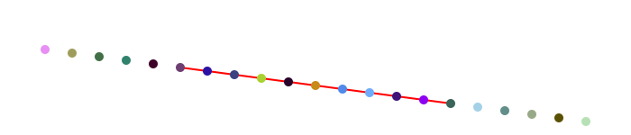
Values less than 0.0 and greater than 1.0 appear to work well too, placing the point on the line if extended.
center3pts finds the radius and center point of a circle passing through three points which you can then use with functions such as circle or arc2r.
perpendicular finds the foot of a perpendicular line which lies on a line through two points perpendicular to a another point.
A, B = Point(-150, 0), Point(150, 50)sethue("grey50")fontsize(18)setline(4)line(A, B, action = :stroke)# point perpendicular to lineC = Point(-50, -80)D = perpendicular(A, B, C)# line perpendicular to lineE, F = perpendicular(A, B)# point perpendicular to extended lineG = Point(230, -200)H = perpendicular(A, B, G)sethue("grey50")label.(string.(["A", "B", "C", "D", "E", "F", "G", "H"]), :ne, offset=10, (A, B, C, D, E, F, G, H))sethue("red")arrow(C, D)sethue("green")arrow(E, F)sethue("orange")arrow(G, H)sethue("purple")circle.([A, B, C, D, E, F, G, H], 4, action = :fill)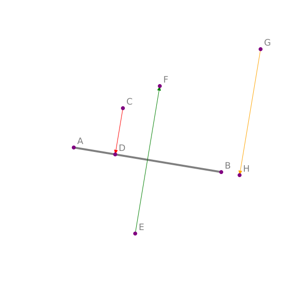
Points and arcs
Use isarcclockwise(c, p1, p2) to check whether an arc centered at c running from p1 to p2 is clockwise.
The pointinverse function finds the inverse of a point relative to a reference circle (centerpoint and radius). In the following example, each vertex on the shape inside the circle is linked by an arrow to its inverse outside the circle.
d = @drawsvg begin radius = 60 circle(O, radius + 20, action = :stroke) points = polycross(O, radius, 7, vertices=true) poly(points, action = :stroke, close=true) antipoints = last.([pointinverse(pt, O, radius + 20) for pt in points]) #antipoints = last.(pointinverse.(points, O, radius+20)) for (n, ptpair) in enumerate(zip(points, antipoints)) pt1, pt2, = ptpair sethue(HSB(length(points) * n, 0.8, 0.8)) circle(pt1, distance(O, pt1)/6, action = :fill) circle(pt2, distance(O, pt2)/6, action = :fill) sethue("black") arrow(pt1, pt2) endend 800 500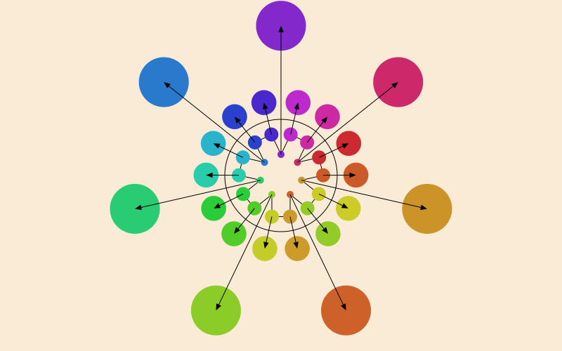
Use anglethreepoints to find the angle formed by two lines connecting three points:
function showangle(pt1, pt2, pt3) θ = anglethreepoints(pt1, pt2, pt3) label(string(round(rad2deg(θ), digits=2), "°"), :w, pt2) newpath() carc(pt2, 50, 0, -θ) strokepath()endlet background("grey20") sethue("white") fontsize(12) tiles = Tiler(800, 800, 4, 4) for (pos, n) in tiles @layer begin translate(pos) pg = [polar(50, 0), O, polar(50, n * -2π/16)] poly(pg, action = :stroke) for n in 1:3 pt1 = pg[1] pt2 = pg[2] pt3 = pg[3] showangle(pt1, pt2, pt3) end end endend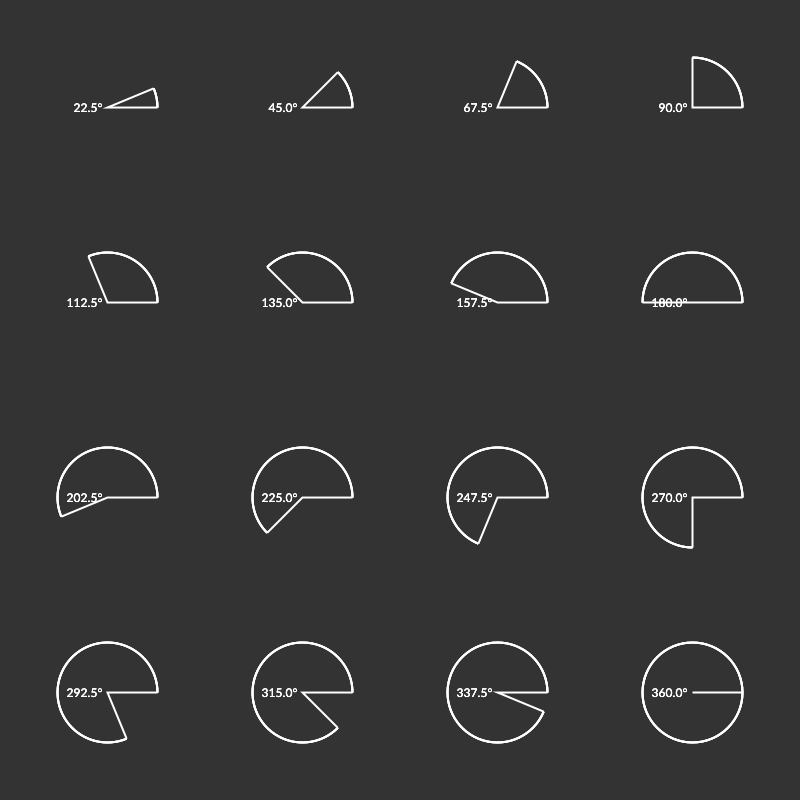
Round corners
The roundcorner function takes three points that define a corner, plus a radius. The function returns three points and a Boolean flag: the first and third define the ends of the circular arc, the second defines the center of the circle with the given radius. The Boolean flag indicates whether the arc should be drawn clockwise.
background(0.8, 0.7, 0.7) fontsize(25) p1, corner, p3 = ngon(O, 250, 3, vertices=true) label.(("p1", "corner", "p3"), :NE, (p1, corner, p3)) circle.((p1, corner, p3), 5, :fill) p1c, cp, p2c, clockwise = roundcorner(p1, corner, p3, 80) label.(("p1c", "cp", "p2c"), :NW, (p1c, cp, p2c)) circle.((p1c, cp, p2c), 5, :fill) @layer begin setdash("dot"); circle(cp, 80, :stroke) end move(p1) line(p1c) arc2r(cp, p1c, p2c) line(p3) strokepath()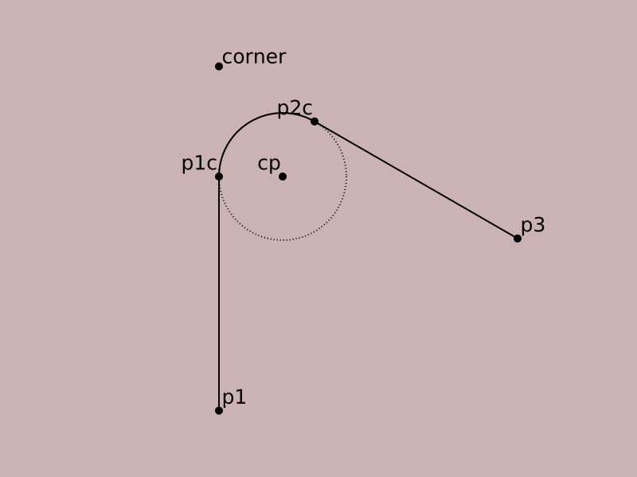
Other functions
Other functions that help with geometry include:
distancedistance between two pointsgetnearestpointonlinedrop perpendicularpointlinedistancedistance of point from line between two pointsslopeangle of line between two pointsperpendicularfind perpendiculardotproductscalar dot product of two points@polarconvert radius and angle to pointpolarconvert radius and angle to pointispointonlinetrue if point lies on lineispointonpolytrue if point lies on any edge of polygonisarcclockwisetrue if arc is clockwisepointinverseinverse of point with respect to circleanglethreepointsangle formed by two lines defined by three pointsdeterminant3find determinant of matrix of 3 pointsrotatepointrotate point around another by angle
Triangle centers
To find the center of a triangle, use one of:
trianglecircumcentercenter of circumcircle/intersection of the perpendicular bisectors.triangleincenterintersection of the interior angle bisectorstrianglecentercentroidtriangleorthocenterintersection of the altitudes
▲ = Point[Point(-100.0, 0.0), Point(110.0, 30.0), Point(65.0, 90.0)]@layer begin sethue("red") setline(2) poly(▲, :stroke, close=true)end# circumcentercircle(▲..., action = :stroke)cp = trianglecircumcenter(▲...)circle(cp, 2, action = :fill)label("circumcenter", :N, cp)# incentercp = triangleincenter(▲...)circle(cp, 2, action = :fill)pt1 = getnearestpointonline(▲[1], ▲[2], cp)@layer begin sethue("black") circle(cp, distance(cp, pt1), action = :stroke) label("incenter", :S, cp)end# centercp = trianglecenter(▲...)circle(cp, 2, action = :fill)label("center", :w, cp)# orthocentercp = triangleorthocenter(▲...)circle(cp, 2, action = :fill)label("orthocenter", :e, cp)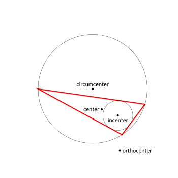
Intersections
intersectionlines finds the intersection of two lines.
sethue("black")P1, P2, P3, P4 = ngon(O, 100, 5, vertices=true)label.(["P1", "P2", "P3", "P4"], :N, [P1, P2, P3, P4])line(P1, P2, action = :stroke)line(P4, P3, action = :stroke)flag, ip = intersectionlines(P1, P2, P4, P3)if flag circle(ip, 5, action = :fill)end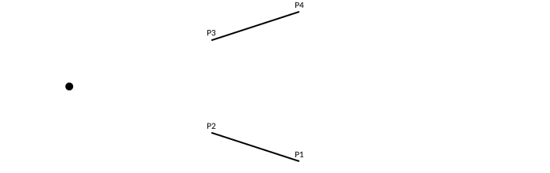
intersectionlinecircle finds the intersection of a line and a circle. There can be 0, 1, or 2 intersection points.
l1 = Point(-100.0, -75.0)l2 = Point(300.0, 100.0)rad = 100cpoint = Point(0, 0)line(l1, l2, action = :stroke)circle(cpoint, rad, action = :stroke)nints, ip1, ip2 = intersectionlinecircle(l1, l2, cpoint, rad)sethue("black")if nints == 2 circle(ip1, 8, action = :stroke) circle(ip2, 8, action = :stroke)endintersection2circles finds the area of the intersection of two circles, and intersectioncirclecircle finds the points where they cross.
This example shows the areas of two circles, and the area of their intersection.
c1 = (O, 150)c2 = (O + (100, 0), 150)circle(c1... , action = :stroke)circle(c2... , action = :stroke)sethue("purple")circle(c1... , action = :clip)circle(c2... , action = :fill)clipreset()sethue("black")text(string(150^2 * π |> round), c1[1] - (125, 0))text(string(150^2 * π |> round), c2[1] + (100, 0))sethue("white")text(string(intersection2circles(c1..., c2...) |> round), midpoint(c1[1], c2[1]), halign=:center)sethue("red")flag, C, D = intersectioncirclecircle(c1..., c2...)if flag circle.([C, D], 5, action = :fill)end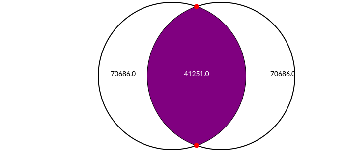
Scaling and interpolation
rescale is a convenient utility function for interpolation.
rescale(i, lo, hi) interprets the value i on a scale between lo and hi. So rescale(0.5, 0, 10) returns 0.05, being 0.5ths of the way between 0 and 10,
Interpolation is linear, unless you pass an easing function to the easingfunction keyword.
In the next example, the x-coordinates are scaled linearly between -300 and 300, but the y-coordinates are scaled between -150 and 150 using an easing function.
@drawsvg begin background("antiquewhite") sethue("black") for i in range(0, 1, length=50) pt = Point(rescale(i, 0, 1, -300, 300), rescale(i, 0, 1, -150, 150, easingfunction=easeinoutexpo)) circle(pt, 4, :fill) rule(pt, π/2) endend 800 400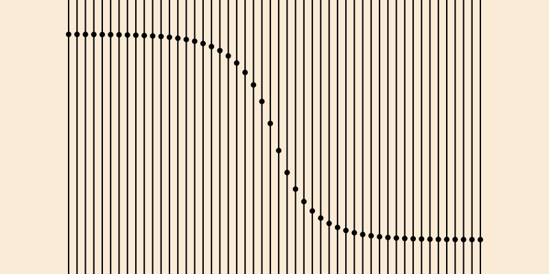
A way to visualize interpolation is by imagining two number lines. A value relative to a pair of low and high values is rescaled to have the equivalent value relative to another pair of low and high values.
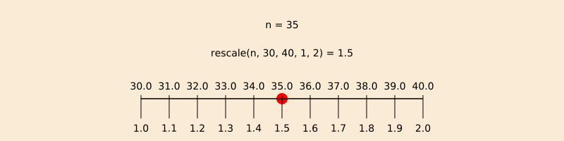
This function is sometimes called “lerp” in other systems. For example, in Processing, the lerp() function takes the form lerp(low, high, value), where the returned value lies between low and high corresponding to how value lies between 0 and 1.
The equivalent to lerp(10, 20, 0.5) in Luxor is rescale(0.5, 0, 1, 10, 20). Luxor requires a ‘from’ scale (here ... 0, 1, ...) although the ‘to’ scale is optional and defaults to 0, 1.
Bounding boxes
The BoundingBox type allows you to use rectangular extents to organize and interact with the 2D drawing area. A BoundingBox holds two points, the opposite corners of a bounding box.
You can make a BoundingBox from:
- the current drawing
- two points
- a text string
- an existing polygon
- a stored path
- a table or table cell
and by modifying an existing bounding box, or using the results of functions such as circle() or box().
BoundingBox without arguments defines an extent that encloses the drawing (assuming that the origin is at the center of the drawing—see origin). Use centered=false if the drawing origin is still at the top left corner.
This example draws circles at three points: at two of the drawing's corners and at the midway point between them:
origin()bb = BoundingBox()setline(10)sethue("orange")circle(bb[1], 150, action = :stroke) # first cornercircle(bb[2], 150, action = :stroke) # second cornercircle(midpoint(bb...), 150, action = :stroke) # midpointsethue("blue")circle.([bb[1], midpoint(bb[1:2]), bb[2]], 130, action = :fill)sethue("red")circle.([first(bb), midpoint(bb...), last(bb)], 100, action = :fill)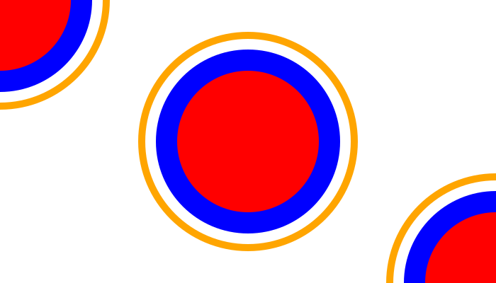
You can make a bounding box from a polygon:
p = star(O, 100, 5, 0.1, π/3.3, vertices=true)sethue("antiquewhite")box(BoundingBox(p), action = :fill)sethue("black")poly(p, action = :stroke, close=true)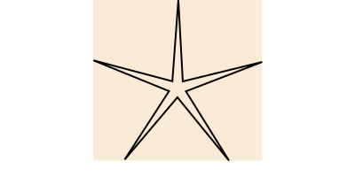
The resulting bounding boxes can be passed to box or poly to be drawn.
To convert a bounding box b into a box, use box(b, vertices=true) or convert(Vector{Point}, BoundingBox()).
To obtain the coordinates of the corners or key points on the bounding box, use the functions with names combining box and top|middle|bottom and left|center|right. So boxtopleft(bbox) finds the top left corner of the bounding box bbox.
You can also do some arithmetic on bounding boxes. In the next example, the bounding box is created from the text "good afternoon". The bounding box is filled with purple, then increased by 40 units on all sides (blue), also scaled by 1.3 (green), and also shifted by (0, 100) (orange).
translate(-130,0)fontsize(40)str = "good afternoon"sethue("purple")box(BoundingBox(str), action = :fill)sethue("white")text(str)sethue("blue")modbox = BoundingBox(str) + 40 # add 40 units to all sidespoly(modbox, action = :stroke, close=true)sethue("green")modbox = BoundingBox(str) * 1.3poly(modbox, action = :stroke, close=true)sethue("orange")modbox = BoundingBox(str) + (0, 100)poly(modbox, action = :fill, close=true)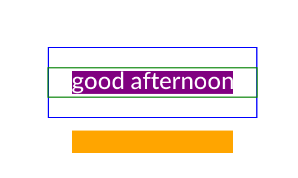
You can find the union and intersection of BoundingBoxes, and also find whether a point lies inside one. The following code creates, shrinks, and shifts two bounding boxes (colored yellow and pink), and then draws: their union (a bounding box that includes both), in black outline; and their intersection (a bounding box of their common areas), in red. Then some random points are created (you can pass a bounding box to rand() to get a random point inside the box) and drawn differently depending on whether they're inside the intersection or outside.
origin()setopacity(0.75)setline(8)bbox1 = BoundingBox()/2 - (50, 30)sethue("yellow")box(bbox1, action = :fill)bbox2 = BoundingBox()/2 + (50, 30)sethue("pink")box(bbox2, action = :fill)sethue("black")box(bbox1 + bbox2, action = :stroke)sethue("red")bothboxes = intersectboundingboxes(bbox1, bbox2)box(bothboxes, action = :fill)for i in 1:500 pt = rand(bbox1 + bbox2) if isinside(pt, bothboxes) sethue("white") circle(pt, 3, action = :fill) else sethue("black") circle(pt, 2, action = :fill) endend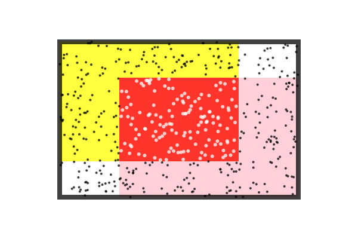
To find out where a line starting at the center of a bounding box passing through a point crosses or would cross the edges of the box, use pointcrossesboundingbox.
bx = BoundingBox(box(O, 200, 200))setline(1)box(bx, action = :stroke)for i in 1:10 pt = randompoint((1.5bx)...) pt2 = pointcrossesboundingbox(pt, bx) sethue("grey50") arrow(O, pt) sethue("red") circle(pt2, 3, action = :stroke)end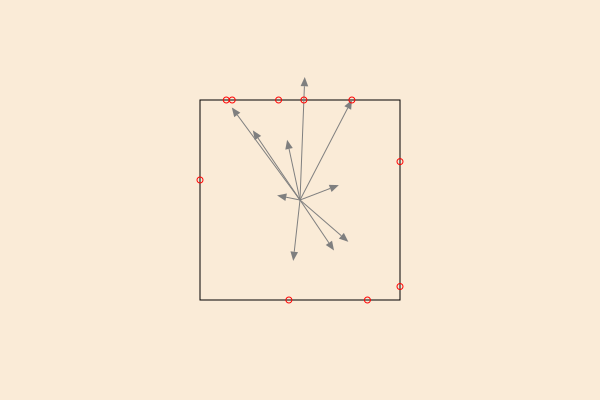
Random points
You can use randompointarray to create an array of randomly placed points.
The randompointarray(boundingbox, distance) method fills the boundingbox with random points up to distance units apart using a Poisson Disk sampling method.
background("black")b = blend( boxtopleft(BoundingBox()), boxbottomright(BoundingBox()), "red", "green")addstop(b, 0.3, "orange")addstop(b, 0.4, "magenta")addstop(b, 0.5, "cyan")addstop(b, 0.7, "yellow")setblend(b)for pt in randompointarray(BoundingBox() * 0.9, 15) d = rescale(distance(pt, O), 0, sqrt(800 * 500), 1, 0) circle(pt, 1 + 7d, action = :fill)end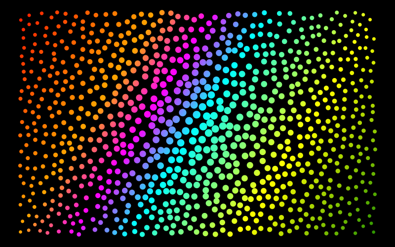
The randompointarray(point1, point2, n) method generates n random points in the area bounded by two points, using Julia's random number generator.
pt1 = Point(-300, -150)pt2 = Point(300, 150)sethue("purple")map(pt -> circle(pt, 6, action = :fill), (pt1, pt2))box(pt1, pt2, action = :stroke)sethue("blue")map(pt -> circle(pt, 4, action = :fill), randompointarray(pt1, pt2, 200))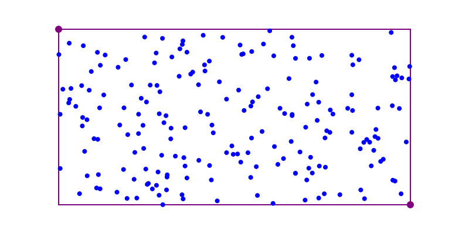
Use rand(BoundingBox()) to return a single point somewhere inside a bounding box.
Noise
For artistic graphics you might prefer noisy input values to purely random ones. Use the noise function to obtain smoothly changing random values corresponding to input coordinates. The returned values wander slowly rather than jump about everywhere.
In this example, the gray value varies gradually as the noise function returns values between 0 and 1 depending on the location of the two input values pos.x and pos.y.
The top two quadrants use a lower value for the detail keyword argument, an integer ()>= 1) specifying how many "octaves" of noise you want.
The left two quadrants use a lower value for the persistence keyword argument, a floating point number specifying how the amplitude diminishes for each successive level of detail. There is more fine detail when the persistence is higher, particularly when the detail setting is also high.
tiles = Tiler(800, 400, 200, 200)sethue("black")for (pos, n) in tiles freq = 0.05 d = pos.y < 0 ? 1 : 4 pers = pos.x < 0 ? 0.3 : 1.0 ns = noise(freq * pos.x, freq * pos.y, detail=d, persistence=pers) setgray(ns) box(pos, tiles.tilewidth, tiles.tileheight, action = :fillstroke)end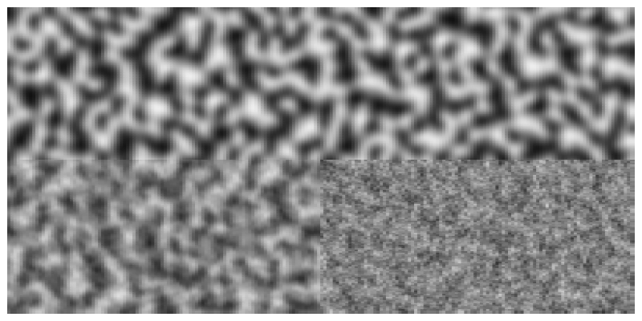
Use initnoise to initialize the noise behaviour.